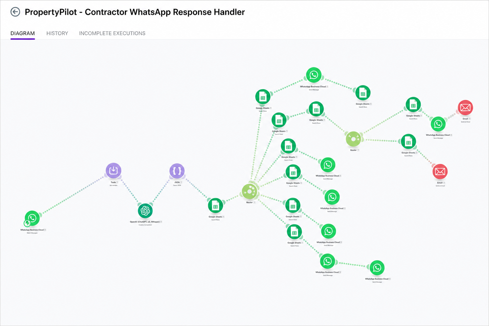
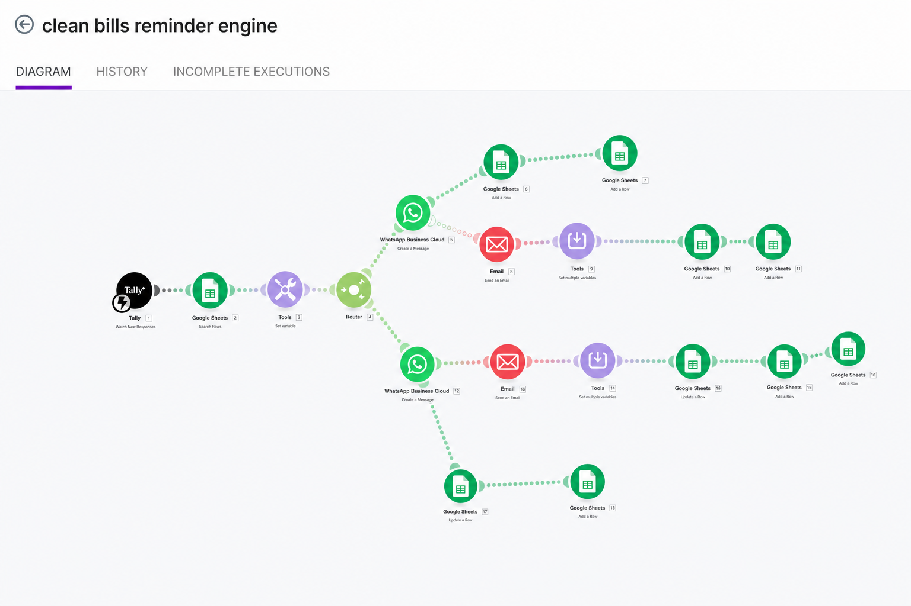
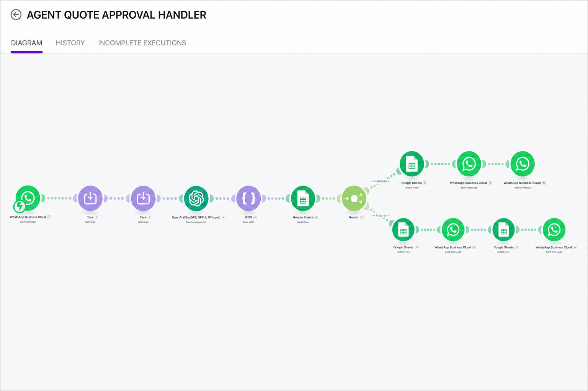
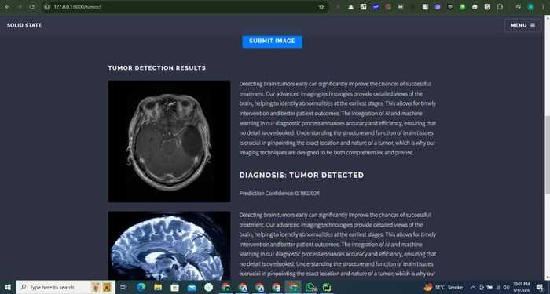
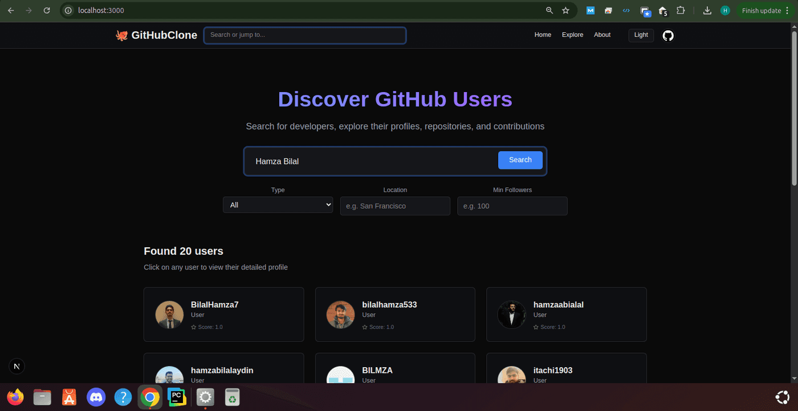
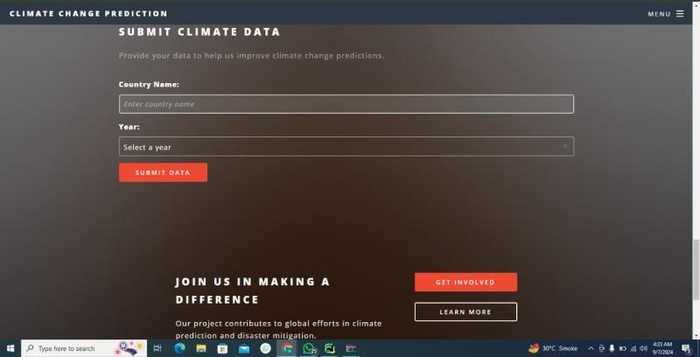

Automation / Backend / AI Agents
03+
Years of
Experience
Experience
Read About My Life
Building intelligent systems that remove busywork and scale operations.
I design self-healing automation pipelines with n8n, Make.com, Zapier, OpenAI, LangChain, AWS, Django, and FastAPI. My work connects CRMs, data sources, marketing tools, and custom AI agents into reliable production systems.
Our Services
Premium automation, AI agent, and backend engineering services for teams that need practical systems, clean integrations, and measurable business outcomes.
Professional Experience
AI Automation Engineer
Automyra AI - Full-time - Remote
Designing intelligent automations, LLM pipelines, monitoring, and multi-step integrations for business operations.AI Automation & Backend Engineer
Techticks - Karachi
Shipped 50+ n8n, Make.com, and Zapier workflows with Django, FastAPI, AWS, CRM, and ML integrations.Trainer - AI Automation & Backend
Techticks - Concurrent Role
Led training on Python backends, AI workflow design, LLM orchestration, and AWS deployment practices.Backend & Automation Developer
Distack Solutions & Enigmatix Pvt Ltd
Delivered REST APIs, OAuth2 flows, CRM automation, webhook pipelines, and B2B data integrations.Our Portfolio
Production-focused work across AI automation, backend systems, cloud AI/ML, CRM workflows, and full-stack portals.

PropertyPilot - Contractor WhatsApp Response Handler
WhatsApp workflow that reads contractor replies, uses AI to structure responses, routes updates through Google Sheets, and sends follow-up messages or email alerts.

Clean Bills Reminder Engine
Reminder automation that checks billing records, branches reminder stages, sends WhatsApp and email notifications, and updates Google Sheets for tracking.

Agent Quote Approval Handler
AI-assisted quote approval workflow that parses WhatsApp media, extracts quote data with OpenAI, updates Sheets, and sends approval or rejection responses.
Hostyo Owner Portal
Multi-tenant property owner portal with live reservations, payouts, expenses, and Notion-backed performance dashboards.
Complex PDF Data Extraction
Built a production OCR and LLM extraction system for scanned PDFs, invoices, reports, and mixed-layout documents. The workflow extracts key fields, validates missing or incorrect values, converts the result into clean JSON, and sends the approved data into automation pipelines.
Social Media AI Assessment
Built an AI content assessment workflow for TikTok, Instagram, Facebook, and YouTube. The system analyzes captions, comments, images, video transcripts, and speech to identify content quality, brand safety issues, engagement signals, and campaign performance insights.
Automated Outreach System
Lead generation workflow using LinkedIn, email, enrichment, AI-personalized openers, reply detection, and CRM reporting.

Brain Tumor Detector
Django medical AI application for detecting brain tumors with EfficientNet and TensorFlow/Keras inference.

GitHub Clone
Responsive GitHub-style app for searching profiles and exploring repositories, followers, and contribution stats.

Climate Change Prediction
Django platform that shows country-level climate projections for the next 50 years using generated JSON data.
Close CRM Outlook Sync
Bi-directional n8n sync between Close CRM tasks and Outlook Calendar events with conflict handling and retry alerts.
HubSpot Email Scraper
Prospect-email scraping and import pipeline with validation, deduplication, enrichment, and HubSpot list segmentation.
Testimonials
Clients value clean delivery, direct communication, and automation systems that keep working after launch.
Latest Blog
Articles and thinking themes aligned with my day-to-day work in automation, agents, backend systems, and AI operations.
How AI Agents Fit Into Real Business Workflows
Practical patterns for connecting LLM reasoning with deterministic automations.
Designing n8n Workflows That Do Not Break at Scale
Retries, idempotency, logs, alerts, and clean integration contracts.
Shipping AI/ML Services on AWS With Confidence
A field guide to Textract, Comprehend, SageMaker, Docker, and CloudWatch.
Contact Us
Let's build a premium automation system.
Tell me about your workflow, CRM, backend, or AI idea and I will help you shape it into a production-ready system.
ai8254072@gmail.com +92 322 1607275 Karachi, Pakistan - Open to Remote